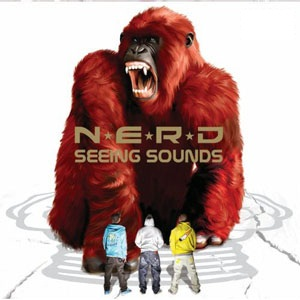
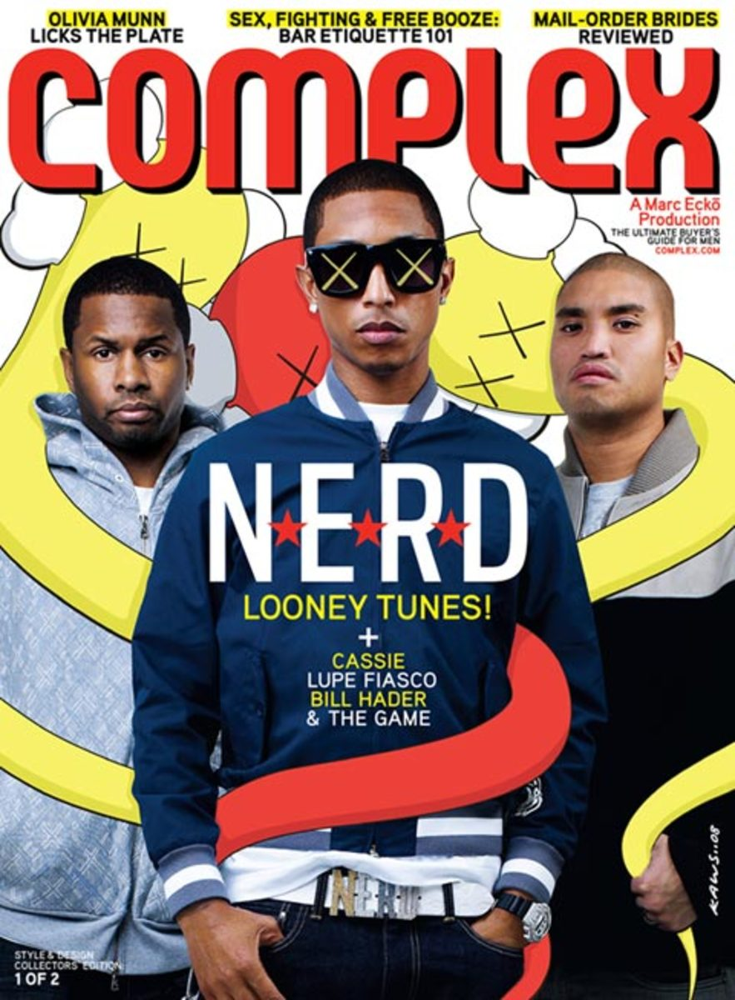

Interviewing Pharrell Williams is like winning a 25-minute shopping spree in the Mall of America: you’re grateful for the opportunity, but it’s a lot to cover in limited time. With clothing and jewelry lines, art exhibits, teen-aimed web sites and more on his plate, being an A-List producer/musician is only one element of his creativity. Several hours before the interview, the stakes were raised: this writer was told that the whole N*E*R*D braintrust of Pharrell, Chad Hugo, and Shay would all be on the phone. You know, the same N*E*R*D that virtually changed the landscape of urban music by fearlessly re-introducing the Pop/Rock aesthetic to a fanbase that was used to hearing The Neptunes (the duo of Hugo and Pharrell) craft gems for rap/R&B stars like Jay-Z, Ludacris and Mystikal in years prior.
In the interview below, this writer embarks on his shopping spree with dozens of stores surrounding him and but one shopping cart clutched in his hands. Continue reading to see N*E*R*D chop it up about their memorable live performances and their upcoming album Nothing, while Pharrell explains his youth initiatives, clowning Diddy on camera, and co-executive producing The Game’s R.E.D. album with Dr. Dre.
HipHopDX: First I would like to congratulate you guys because N*E*R*D’s Seeing Sounds was HipHopDX’s “2008 Non-Hip Hop Album of the
Pharrell: It’s more of a movement. It like the hippie mentality, except ours is different. It’s not like Birkenstock’s and granola bars. It’s more like flowers and Ferraris. You know, we think [there is] room under the sun for everyone. That’s the only way for everyone to get along. It’s just the times…there’s so much going on in the world right now. We just want to document it. We’re like news reporters. Humankind is on the brink of another…going through another phase. We have very serious advances in technology, like the iPad. And then we have very serious faulty situations and issues for the environment, like the [Gulf Coast] oil spill. So for us it feels a lot like the late ’60s or early ’70s, so that’s kind of most of the sound of the album but then we have stuff we ain’t used to.
DX: Do you think there’s one song that encapsulates what the album has to offer?
Pharrell: Hmm…Shay, Chad what do you think?
Shay: If I had to choose one song I would say…shit, there’s so many. See, it’s kind of hard right now because the album isn’t done. We’re still in the process of recording new material and uh…what’s that?
Chad Hugo: “I’ve Seen The Light.”
Shay: Oh. Well that’s Chad, and he thinks [the song] “I’ve Seen The Light” best describes the album. I don’t think there’s one song that I could choose right now that describes Nothing.
Pharrell: My choice would be…I’ll stand behind “I’ve Seen The Light,” or this song called “Help Me.”
DX: What is it about those songs that does it for you?
Pharrell: It’s just the sound. The nature of the chords, the nature of the progressions, the melodies and you know, just the way we all worked on it and what we were trying to build. These songs that offers hope to people.
DX: As a kid, I copped In Search Of solely off the strength of the Neptunes name based on your Rap songs and I can remember copping it and being blown away by the Rock star sounds and the look of the group. I was just used to Rap songs from you guys. Did it feel like you were on a limb back then because you were taking on the Rock and Pop sound even though your background was in hip hop?
Shay: We didn’t give it much thought then. Pharrell and Chad were already established as producers, and when we got around to recording N*E*R*D’s [In Search Of] it was just an expansion. I’m not sure if you know, but before the guys were a production team, we were a band first. We were a group. So it was just like going back to our original core.
DX: It was super natural for you all, but I know for me personally it was a gateway to other genres…
Shay: Yeah. You know, what’s really funny is, I didn’t pay attention to the movement we created back then. I was reading articles in Rolling Stone and other credible magazines on what they thought. And just the praising, acclaim and notoriety for stepping out…it was just always something we had done. We listen to Hip Hop as much as we listen to Steely [Dan] and Nine Inch Nails and heavy Rock bands, so fusing all those elements together we didn’t see as revolutionary. It was just something that was a part of us, something we did naturally. I mean it didn’t really dawn on me until the later years when we did the Fly or Die record, that I understood what people were talking about.

DX: So how does Rhea fit into the aesthetic?
Pharrell: Well she was there with us for about six months. We were working on the album, and we had a lot of girl parts, so it worked for that. But then listening back on it, we thought, “Whoa, this is good, but not good enough for what we wanted to do.” So it was inspiring, and we stopped to take a look at culture. Take a look at what’s going on in the world, and then we went back and all the songs came to us, like “I’ve Seen The Light” and “Help Me” and all these records that felt like they came from the early ’70s or late ’60s. And it just made sense. You’ll see when you hear this record, man. It’s friendly to anyone and everyone, and when you hear it, it just takes you to another place.
DX: I’ve seen you all perform live twice Detroit, and the live show is crazy. How long did it take you to get that routine down and to get into your groove for live performances? Shay said you all were already a band. Did that help a lot, or did it take even more time to get there?
Shay: Aw naw, when I say we were a group first, I mean we were a group that just jammed out in Chad’s garage. When it came to rocking an audience, we were inexperienced. We didn’t know what we were doing. As time went on, we got our pocket. We learned how to interact with the crowd, and how to put on a 45-minute to an hour of entertainment. If you look at any footage of the early days, it was horrible – to me.
Pharrell: I wouldn’t be so hard on us. I would say that there was a lot of experimentation. I agree that we didn’t know what we were doing, but I feel like people still walked away happy that they came to the shows. There’s certainly no comparison to what we do now. We understand our fans, what they want, what they come to see, and with that there’s also the balance of what we have to give them. Because our fans expect 75% and then they expect 25% of something new. We have two drummers. Now that is becoming a semi-standard. We just to try to push, and that’s one of the things Shay made a point. Experience just taught us so much, and our tricks and everything we needed to do to take it to the next level. It took some years to get that down.
DX: Do you guys have any memorable performances or crowd reactions that stick to you now?
Shay: For me I would say our very first show. It was for this charity event in New York. It was at Fillmore, or could have been Hammerstein, but it was with the Beastie Boys. We went on before those guys, and then watching those guys perform we saw that they really rock a crowd years later. It blew me away.
DX: Alright. What about you, P or Chad?
Pharrell: Yeah, Beastie Boys were unreal. … I just have a good night every night, I really do. Some nights are better than others.
Chad: There was a stadium show we did. I think the one in Germany was amazing. The whole amphitheater was just really into it. It’s just crazy how music crosses all language boundaries. People get into it and they know all the words. That was a good one, with like 50,000 people.
DX: Pharrell, I’ve been paying attention to what you’ve been doing lately, and I saw an interview you had with CNN for work you’re doing with the schools. With your web sites, you’re taking on the approach of empowering kids to do change on their own instead of just giving them a charity.
Pharrell: With artst.com, Chad, Shay and myself always get bombarded. But our message as N*E*R*D and The Neptunes is that it’s not just us; you can do it to, and probably better. But we would get bombarded with a lot of stuff, and we couldn’t possibly use everything. So we figured the best thing we can do is offer everyone visibility, and that’s what we did with Artst.com. With Kidult.com, we just felt like there was a surge of young kids that were concerned with the science of politics and so many other interesting topics, but bottom line, it was underserved. We have a demo of 14 to 20, and there was nothing that catered to them in the right voice. It would talk down to them, but they want to read TIME magazine just like anybody else, so they do. So imagine if they had their own thing that spoke to them at eye level.
I’m not a role model, and I don’t think anybody should be like me. I think everyone should be individuals in their own respect, and we built those sites to empower them and promote that very idea. You can be better than me, and maybe one day you’ll be my role model. But these are the seeds.

DX: Part of the reason these projects are interesting is because I’ve heard you say in interviews that you’re a big kid, and you’re appealing to kids. But meanwhile, you’re removing your tattoos. It’s interesting to see you growing up, while still giving young people their own forum.
Pharrell: I’ve just got to finish getting rid of them. I don’t know if I won’t get any more tattoos, but I know I want to get rid of these, the ones on my arms. I have one on my neck and one on my leg that I’m keeping, and I’ve got one on my leg that I’m keeping.
This band, we all have interesting ventures. Chad does a lot of production on the side as well, like Kenna and a bunch of other people. Shay manages a band called Mansion on the Moon, and he has another band and set of producers named Christian Rich. N*E*R*D is almost like a company in itself, with these separate entities. We have a job to do: we formed because we want to have fun. When we became N*E*R*D after The Neptunes, it was all about having fun. We never thought about how many records we’re going to sell. That wasn’t the intent; of course you want to sell as many as we can, but we don’t want to compromise the integrity of what made us all get together. And I’m happy, because as proud as I am over the last three albums, I feel like we’re back where we started.
DX: It’s interesting that you say that, because one thing people respect about N*E*R*D and Neptunes is that you guys seem to always make the music you want to make. N*E*R*D albums have done well, you guys are good as both group and solo producers. Certain projects get panned, certain ones get acclaimed, and projects like Out Of My Mind don’t even come out. Do you have anymore financial goals or sales goals to reach, or is it strictly for the love at this point?
Pharrell: For me, N*E*R*D is strictly for the love. My other businesses have been good to me, so there’s no need to put that in the bowl of N*E*R*D.
Shay: For me, it’s a little bit of both. I love the fan base we have right now, but to expand and reap what’s on a bigger scale would be great. We put a lot of blood, sweat and tears in these projects. So to read mags and come across kids at shows who say, “This song changed my life and got me through a difficult time,” that can’t be measured. But to see it number one on Soundscan doesn’t hurt either.
DX: Since I’ve got all three of you guys on the phone, do each of you have a specific song or album that you’ve done that was either slept on or dissed at the time, but you think that later on will be praised?
Shay: I would say on Seeing Sounds, there’s a song called “Love Bomb.” I think that was slept on, but I think it’ll eventually come around and be a big song. Maybe Discovery Channel will pick up the song and put it on a documentary with a Morgan Freeman voiceover. I honestly think that record will come around eventually.
Pharrell: I agree, “Love Bomb” was one of those ones. But I’m telling you, this album has some treats.
DX: P, on a different note, you and Diddy’s scene in Get Him To The Greek was one of the funniest scenes in the movie.
Pharrell: I’m going to ask you: are people saying that to me to be nice, or is it really that good? I haven’t gone to the theater to watch the reaction, and I haven’t even seen the film.
DX: Part of what makes it funny is that it was out of nowhere, because I wasn’t expecting to see you in the movie. Diddy was funny in the movie, but seeing you in the background was just pretty random.
Pharrell: Thank you man. So many people have said that, but I’m like, “It’s okay, you can be nice, but you don’t have to toot it.” Isn’t it like 10 seconds?
DX: Yeah, it’s only a few seconds. But part of why I found it funny is because I just imagined y’all clownin’ like that if you were really kickin’ it. Do you guys really clown like that, or was it just for the movie?
Pharrell: Not really; it was kind of uncomfortable, because I’ve never joked him before. I joke, but I joke with my friends. I’ve never done that in public, ever. And even with some of my colleagues in the industry, I don’t do that. They’ll hear me joke something else, but we never go at each other. But for the sake of the scene, we had to joke. So when he said something about my shirt, I had to go at him. … It was all improv.
DX: You’ve also got the YouTube video of you at the McDonald’s in Paris…
Pharrell: Oh, that was delirious. I was just tired, man. We had been on a plane for 16 hours coming back from somewhere, I don’t even remember where. And I just wanted a Big Mac, and they were like, “No.”
DX: P, you also executive produced The Game’s new album, R.E.D. with Dr. Dre. What was that like?
Pharrell: It was interesting, because I got to see how his mind works. I was around his people. It’s kind of surreal—you’re around all these seven-foot basketball, type of gang dudes. Nobody’s short. No one. They’re all giants. I’m not the tallest dude in the world anyway, I’m 5’9”. … You’re in a room with all that energy, so you get to see them, and see how they react with each other. It’s kind of like going into a jungle and studying a whole different species of people. And you get to see that they’re not really mean guys; that’s just where they’re from, and just what they know. But there’s such a complexity to this guy’s mind, and that’s the approach that I took to the record. “They have to see the person that I met.” He’s not always ready to pull out the AK. I now understand, it’s a defense mechanism—when something goes down, you’ll talk about it, but when it gets to the point where there’s nothing to talk about, that’s where you go. Unfortunately, that’s the only thing that gets documented.
Let’s take it from the beginning of the process. We just wanted to show you who the person was. There’s definitely some testy, violent songs on the record, but it’s more introspective. It’s more like a film than it is a Rap album.
DX: Outside of your music, you have two huge affinities: art and products. You’ll have art exhibits, you’ll have skin care products for benefits, blinged out gadgets, clothing, etc. Where did your passion for these things come from? Do you have one product specifically that you’re proud of, either because it was tough to create or because you worked with someone you really respected?
Pharrell: I go into all of my projects that way. I go into all projects thinking, “I respect this brand, and I think there’s something I can bring to the table. I can’t wait till they see this one.” I’m an artist, and I express myself. But I don’t proclaim to be any specific type of artist. I’m definitely not a singer, I’m not the best designer in the world, and I don’t have the deepest knowledge of it all. I just know designers I like, furniture designers that I like. I’m just an average guy, man. If anything, I’m like Mr. Consumer Report with a little bit of an opinion to what it could be. You know how it is, when you see something like, “Man, I wish they could’ve done it like this.” But my access to these people lets me be like, “Hey, could you try it like this?” They’re like, “Sure, could you put your name on it?” And I say “Okay cool, let’s make sure the deal makes sense.” That’s kind of what I do.